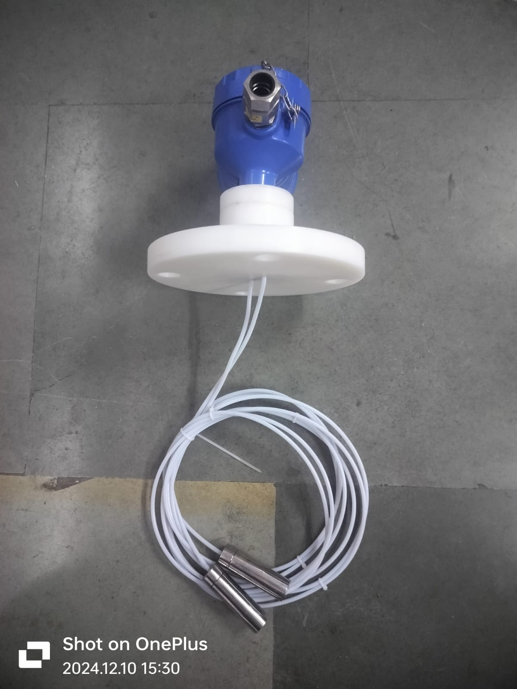

i.style.borderColor='#cbd5e1'); this.style.borderColor='var(--primary-cyan)';" style="width: 60px; height: 60px; object-fit: contain; background: #ffffff; padding: 3px; border-radius: 8px; cursor: pointer; transition: all 0.2s ease; border: 2px solid #cbd5e1;">


Made in India
100% Tested & Calibrated
Model: CPLT-1200L
Continuous Capacitance Level Transmitter (Liquids)
The CPLT-1200L is a high-accuracy continuous capacitance level transmitter designed for reliable level measurement of conductive and non-conductive liquids. Built with full PTFE insulation and integral microprocessor electronics, it converts level changes directly into a linear 4-20mA current output. Available with rigid probes for tanks up to 3 meters and flexible rope probes for deep vessels up to 30 meters.
Conductive & Non-Conductive Liquids
Rigid (3m) & Flexible (30m) Probes
Linear 4-20mA Isolated Output
Easy Push-Button Calibration
IP66 Flameproof / Weatherproof